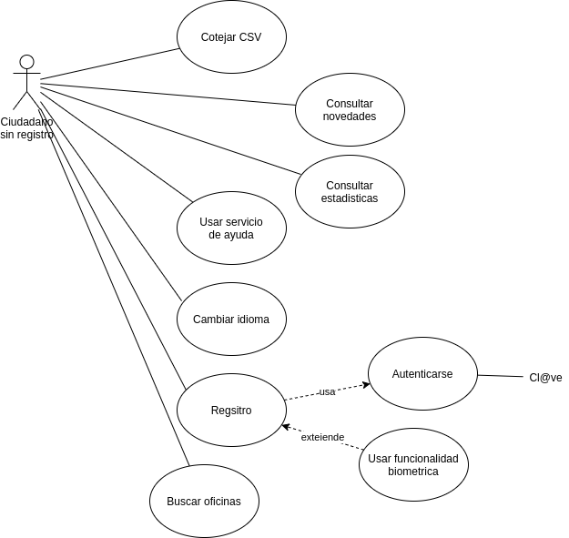
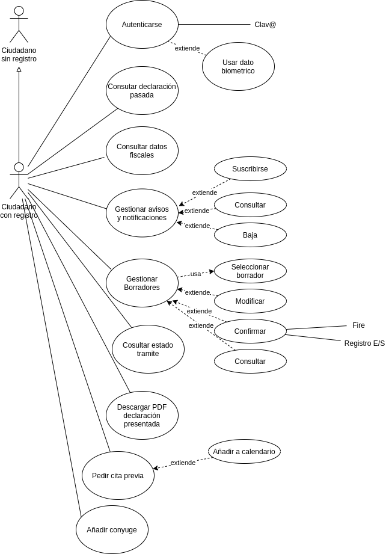
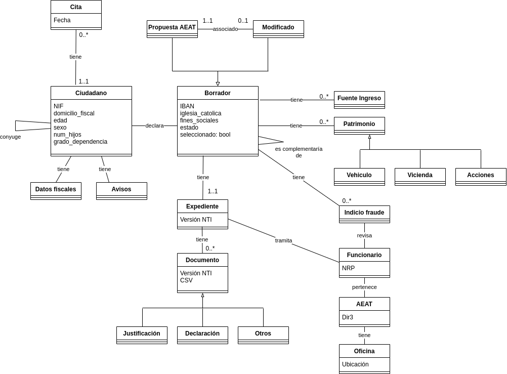

El examen real fueron unas 8 o 9 páginas.
1- A continuación se realiza un análisis interno y externo del sistema a través de un diagrama DAFO (debilidades, amenazas, fortalezas y oportunidades):
|
I N T E R N O |
Debilidades - Menor experiencia en el desarrollo de aplicaciones móviles - Resistencia al cambio |
Fortalezas - Amplio conocimiento en el negocio de la aplicación - Recursos suficientes para acometer el proyecto (no se si me he referido expresamente a los económicos, humanos o ambos) |
|
E X T E R N O |
Amenazas - Falta de uso por parte del público objetivo de la aplicación - Deterioro de la reputación por malas opiniones en la app store |
Oportunidades - Mejorar la lucha contra el fraude - Mejorar la relación con el contribuyente |
En cuanto a la normativa y recomendaciones a tener en cuenta tenemos:
- Será de aplicación la Ley 39/2015 del procedimiento administrativo común en las administraciones públicas debido a que la aplicación realizará trámites como la declaración de la renta. También será de aplicación el RD 203/2021
- Al tratarse datos personales será de aplicación el RGPDw y la LOPD-GDD, debiéndose determinar si es necesario realizar una evaluación de impacto de datos personales. Para ello se hará un análisis de riesgos.
- Se deberá cumplir con el RD 1112/2018 de accesibilidad en servicios web y aplicaciones móviles en la administración publica, para ello se seguirá la norma UNE-EN 301549:2022.
- Se deberá aplicar el ENS y sus guiás CCN-STIC serie 800. En especial se categorizará el sistema (Anexo 1 y guía CCN-STIC 803) y se aplicarán las medidas de seguridad correspondientes (Anexo 2 y guía CCN-STIC 804)
- Se deberá aplicar el ENI y sus NTI, como por ejemplo la NTI del expediente electrónico, la NTI de documentos electrónicos y la NTI del catalogo de estándares.
- Previo al desarrollo, se consultara el CTT y el CISE en busca de soluciones y modelos de datos reutilizables
- Tras el desarrollo, se estudiara si es de interés publicar parte o todo el producto en el CTT y el CISE
- En consonancia con el plan de digitalización de las AAPP se propone mejorar el sistema de asistencia y ayuda con un chatbot. Podemos usar para ello soluciones como Google DialogFlow, Watson Assistant de IBM, o el framework Rasa (python con tensorflow)
- Se deberán usar los servicios comunes que puedan facilitar el desarrollo evitando crear nuevas soluciones. En concreto podemos usar:
2- A continuación se muestran los casos de uso del ciudadano


3- A continuación se muestra el diagrama de clases del sistema

4- Las alternativas disponibles para hacer una aplicación móvil son:
- Desarrollar una Aplicación Web Progresiva
- Desarrollar una Aplicación Híbrida
- Desarrollar una aplicación Nativa
Cada opción ofrece mejor rendimiento, mejor experiencia de usuario y mayor acceso a funcionalidades nativas que la anterior, pero también supone mayor gasto de recursos (tanto de desarrollo como de mantenimiento).
La primera opción se descarta ya que una AWP esta pensada para ser instalada desde el explorador web y no desde una tienda de aplicaciones.
La segunda opción nos permite tener un entregable para Android y iPhone con un solo desarrollo usando un framework como ionic o React Native, además de permitirnos usar funcionalidades nativas como notificaciones push, geolocalización, etc pero la experiencia de usuario sería peor que con una nativa y puede que no podamos usar todas las funcionalidades deseadas.
Por lo tanto se propone optar por dos aplicación nativa, una en Java para Android y otra en Swift para iphone que nos dará la mejor experiencia de usuario, rendimiento y acceso a todas las funcionalidades del dispositivo que necesitamos, esto es:
- Notificaciones push
- Ubicación
- Determinar si existe mecanismo de bloqueo
- Huela dactilar, reconocimiento facial u otro dato biometrico
Para el uso de las funcionalidades anteriores necesitaremos solicitar permisos para su acceso. Esto es debido a los mecanismos de seguridad que los sistemas operativos móviles tienen para restringir las aplicaciones a los privilegios mínimos necesarios, de manera que ciertas funcionalidades no puedan ser usadas sin consentimiento del usuario.
Nota: la funcionalidad push no requiere permisos, pero puede ser deshabilitada a posteriori por el usuario.
5- Para asegurar la accesibilidad y la usabilidad de la aplicación se plantean las siguientes fases:
- 1º fase: realización de pruebas automáticas de código (especialmente de la interfaz) para detectar lo antes posible los problemas
- 2º fase: realización de pruebas por personal humano, entre los cuales ha de haber personas con distintos grados de discapacidad
El objetivo será cumplir el RD 1112/2018, la norma UNE-EN 301549:2022 correspondiente al nivel doble A de las WCAG 2.1a, y seguir las recomendaciones de usabilidad y ergonómica ISO 9241 en sus tres componentes: eficacia, eficiencia y satisfacción.
Para ello en la 1º fase eliminaremos todos los errores detectables y en la 2º haremos encuestas de satisfacción.